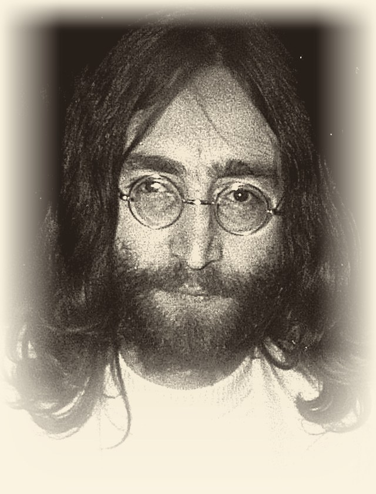

1John Lennon was born on October 9, 1940, in Liverpool, England. It happened during the war. He was named John Winston after his grandfather and Prime Minister Churchill. John’s parents separated, and his strict aunt Mimi raised him.
2When John was 15, his mother bought him his first guitar. Before that, he learned to play the banjo and harmonica. In 1956, he formed his first band, The Quarrymen. Later, this band became The Beatles. In 1957, John met Paul McCartney at a church party. They became great friends and wrote songs together.
3In the 1960s, The Beatles became very famous all over the world. John sang and played guitar. In 1962, he married Cynthia Powell. They had a son, Julian.
4In 1966, John said that The Beatles were more popular than Jesus. This caused a big scandal. In 1969, he returned his MBE medal to the Queen. He protested against the Vietnam War.
5In 1969, John married for the second time. His wife was artist Yoko Ono. Together, they did peace actions – “bed-ins” in Amsterdam and Montreal.
6In 1970, The Beatles broke up. John started a solo career. His first solo album came out in 1970. In 1971, he recorded his famous song “Imagine” about peace.
7In the 1970s, John had problems with the American government. President Nixon wanted to send him out of the USA because of his anti-war views. From 1973 to 1975, John lived apart from Yoko. This period is called his “lost weekend.”
8On October 9, 1975, John and Yoko had a son, Sean. It was John’s birthday on the same day! After that, John did not work as a musician for five years. He stayed at home and raised his son.
9In 1980, John came back to music with a new album, Double Fantasy. Sadly, on December 8, 1980, a crazy fan killed him outside his home in New York City. But John Lennon will always stay in people’s memory as a great musician and a fighter for peace.